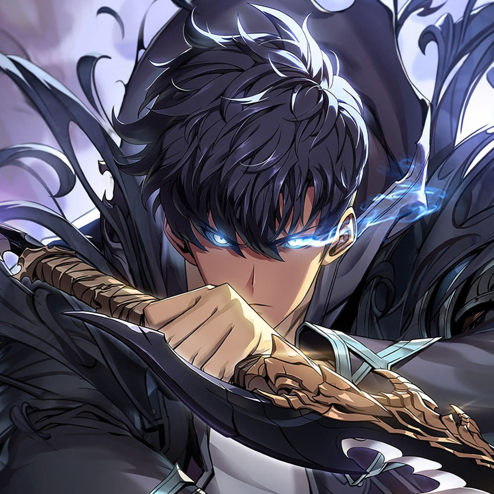
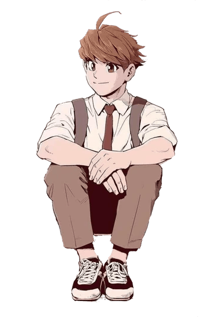

Solo Leveling: From Weak to Unstoppable
September 16, 2025 by Odane Clarke

Solo Leveling is an interesting story that grabs you right away.
It follows Sung Jin-Woo, the weakest hunter who everyone looks down on, until he gains a strange system that lets him level up without limits.
Watching him go from being laughed at to becoming the strongest in the world is both exciting and strangely satisfying.
What makes it a good read, is not only the action but also, the concept of someone who starts at the bottom and keeps pushing forward.
Additonally, the art is well done, the fights are intense, and every new dungeon makes you want to see what’s next.
It’s the kind of manhwa that makes you say, “just one more chapter,” until you’ve read the whole thing.
Ji Jiu: A Hidden Gem in Manhwa
September 22, 2025 by Odane Clarke

Ji Jiu tells the story of a young man caught between weakness and survival in a world that constantly tests him.
Much like other underdog tales, it starts with struggle and hardship, but what makes it stand out is the raw emotion behind the character’s journey.
You can feel the weight of every choice and every battle he faces.
What keeps readers hooked is how grounded it feels despite the fantasy setting. The fights are intense, the pacing keeps you turning pages, and the main character’s growth feels earned rather than rushed.
Ji Jiu might not be as widely known as some big titles, but it’s the kind of story that stays with you once you’ve read it.